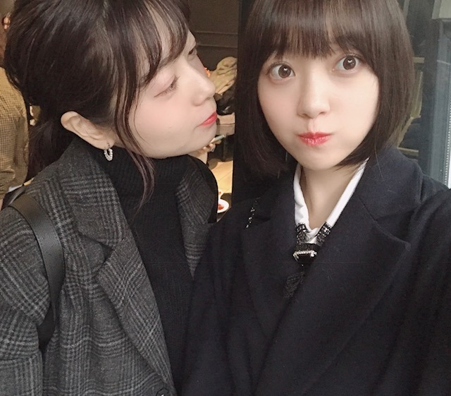
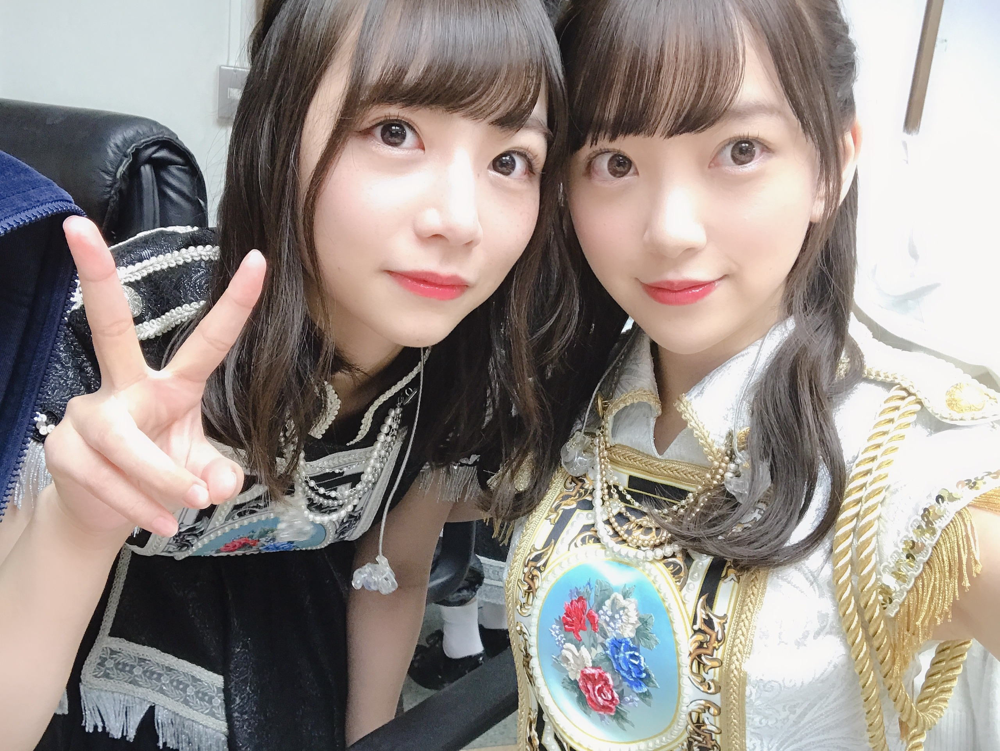

2018/1208Satゆず風呂ってステキ
すっかり冬になりましたね
年末まで駆け抜け、そして2019年
気持ちをビシッと新たに頑張りたいです
そう言いながらも今、少し咳が出ていて...
風邪をひかないようにしなきゃ...
お風呂にもしっかり浸かって温まります♪
あ、ちなみにわたしがお風呂で歌う曲は、
back numberさんスピッツさんaikoさん
が断然多いです、
という謎の報告です

昨日は世田谷ラブストーリーを
歌ってました
大熱唱というよりかはつぶやき歌
みたいな感じですので近所迷惑には
なってないはず、、、
今日はなに歌おうかな〜？
乃木坂も歌います
ひとりよがり
君に贈る花がない
立ち直り中
優しさとは
が好きかな☺︎


いきなりですがこの度、
第11回日本ブルーレイ大賞アンバサダー
に選んでいただきました！
表紙をさせていただいた
「ブルーレイディスクナビゲートBOOK」が
テイクフリーで配布されているみたいです
ブルーレイの話はもちろん
いろんなお話をさせていただいたので
お手にとって見ていただけたら嬉しいです
ブルーレイ大賞アンバサダーとして
ブルーレイはもちろん映画の偉大さや
魅力を伝えていけるよう精一杯頑張ります☺︎
来週の水曜日はFNS歌謡祭に
出させていただきます！
色々な関係で今はエクステを付けていて
髪が長いのですが
ぜひ、頑張って見つけてください...♪
先日の若さんの卒業セレモニーのお話しは
次のブログでゆっくりと
お話しさせていただきます！


笑
堀北コンビ♡
今は2人とも髪が長め
雑誌のお知らせ☺︎
12/12 ar
12/14「遊・悠・WesT」九州版2018冬号
12/14 月刊TVガイド
12/19 週刊東京ウォーカー+
12/20 東海ウォーカー(表紙をさせていただきました)
12/25 OVERTURE
12/26 withよろしくお願いします！
寒いので
皆さんも体調にはお気をつけて...
では☺︎
2018/12/08 09:00
コメント(408)
堀ちゃんこんばんは！
今日は堀ちゃんから熱いモバメを貰えて、僕の心も熱くなりましたよー！
僕は堀ちゃんの言葉によく心を動かされます！
好きだからというのはもちろんあるんですが、選ぶ言葉や文の雰囲気、発信するタイミングなど、いろんな面が相まって自分の中にスッと入ってきます！
いつもは癒しや笑顔を貰っていますが、今日は活力を貰った気がします、身が引き締まる想いです！
いつもの柔らかい堀ちゃんも大好きですが、時折見せてくれる熱い一面も大好きです、ほんとにもっともっと応援したい！という気持ちになります( ´ ▽ ` )
人柄の良さと前を向く力強さの両方を持ち合わせて、両面が表れているのが堀ちゃんのとてつもない魅力だなぁと感じています(o^^o)
微力でも堀ちゃんの夢や幸せのお手伝いをしたいと思っています( ´ ▽ ` )
というわけでひたすら応援してます！！応援しかできないので！！笑
と、気持ちは強く持っても冬はどうしても風邪引いてしまいますよね、寒いし乾燥するし忙しいしで中々そこには勝てませんよね、仕方のないことです( ´ 〜 ` )
でも堀ちゃんがツラい思いをするのは嫌なので、僭越ながら効果のありそうなことを書きます…！
1番いいのはこまめに多めに水を飲むことだと思います！喉が乾く前に飲むのがいいです！
メリットとしては
・菌が喉に定着する前に胃に落として殺菌できる
・喉を潤すことで菌が繁殖しづらくなる
・水を飲むと代謝が上がって回復が早くなる
などです！よかったら試してみてください…！
お身体が心配です、どうぞお大事に…！(>_<)
今日は堀ちゃんから熱いモバメを貰えて、僕の心も熱くなりましたよー！
僕は堀ちゃんの言葉によく心を動かされます！
好きだからというのはもちろんあるんですが、選ぶ言葉や文の雰囲気、発信するタイミングなど、いろんな面が相まって自分の中にスッと入ってきます！
いつもは癒しや笑顔を貰っていますが、今日は活力を貰った気がします、身が引き締まる想いです！
いつもの柔らかい堀ちゃんも大好きですが、時折見せてくれる熱い一面も大好きです、ほんとにもっともっと応援したい！という気持ちになります( ´ ▽ ` )
人柄の良さと前を向く力強さの両方を持ち合わせて、両面が表れているのが堀ちゃんのとてつもない魅力だなぁと感じています(o^^o)
微力でも堀ちゃんの夢や幸せのお手伝いをしたいと思っています( ´ ▽ ` )
というわけでひたすら応援してます！！応援しかできないので！！笑
と、気持ちは強く持っても冬はどうしても風邪引いてしまいますよね、寒いし乾燥するし忙しいしで中々そこには勝てませんよね、仕方のないことです( ´ 〜 ` )
でも堀ちゃんがツラい思いをするのは嫌なので、僭越ながら効果のありそうなことを書きます…！
1番いいのはこまめに多めに水を飲むことだと思います！喉が乾く前に飲むのがいいです！
メリットとしては
・菌が喉に定着する前に胃に落として殺菌できる
・喉を潤すことで菌が繁殖しづらくなる
・水を飲むと代謝が上がって回復が早くなる
などです！よかったら試してみてください…！
お身体が心配です、どうぞお大事に…！(>_<)
堀さん、こんばんは。喉治らないみたいですね。気を張る仕事が続いたりしてるんでしょうか。ハチミツ大根がいいって聞いたので試してみてはいかがでしょう。
モバメ見ました。刺激しあう仲間が居て到達したい目標があってそれを応援するファンが居るって素晴らしいことです。乃木坂と堀さんは必要としあう関係なんですね。そういう居場所を天職と呼ぶと思います。堀さんの前向きさ、というか前へ進む力は乃木坂より先の未来でもそこを天職にするに決まってます。
喉良くなるように、それで目の前のことに全力出し切れるように祈ってます。
あとFNS歌謡祭も楽しみにしてますね。
未央奈ー❗️
ブログありがとう❗️
ホントに寒いよね...笑
これからもっと寒くなるから
体調には気をつけてね✊❗️
お風呂で音楽聴くとリラックスできるよね❗️
ゆうたんより
ブログありがとう❗️
ホントに寒いよね...笑
これからもっと寒くなるから
体調には気をつけてね✊❗️
お風呂で音楽聴くとリラックスできるよね❗️
ゆうたんより
やっぱ乃木坂じゃね(｡･(ｪ)･人ゝ(ｪ)･｡)ｷ゛ｭｯ♪
堀ちゃん、大好きだよー
やぁ未央奈(^ ^)
3日前から喉がカサカサで、咳が止まらない…その影響から、あの透明感のあるかわいい声がハスキーボイスに…
辛い…うん、そうだよね…未央奈は体が強くないだけでなく、喉にも不安を抱えている。ラジオのレギュラー番組がある中でこれはなかなかな状況、状態…。何もしてあげられないというのは、なんとももどかしいものだなと胸が締め付けられるかのような想いだよ…(>_<)
大丈夫かい？こんな時にする無理は、これからやってくるであろうキミの明るい未来をも奪いかねない。だから無理をしてはいけないよ？無理は禁物。今はこれからに向けて疲労が蓄積されたその体を労り休ませてあげる時なんじゃないかな？少しだけ休んで、元気になったらまた頑張ろう！(^ ^)
お大事にね☆(^ ^)
最後まで読んでくれてありがとう(^ ^)
3日前から喉がカサカサで、咳が止まらない…その影響から、あの透明感のあるかわいい声がハスキーボイスに…
辛い…うん、そうだよね…未央奈は体が強くないだけでなく、喉にも不安を抱えている。ラジオのレギュラー番組がある中でこれはなかなかな状況、状態…。何もしてあげられないというのは、なんとももどかしいものだなと胸が締め付けられるかのような想いだよ…(>_<)
大丈夫かい？こんな時にする無理は、これからやってくるであろうキミの明るい未来をも奪いかねない。だから無理をしてはいけないよ？無理は禁物。今はこれからに向けて疲労が蓄積されたその体を労り休ませてあげる時なんじゃないかな？少しだけ休んで、元気になったらまた頑張ろう！(^ ^)
お大事にね☆(^ ^)
最後まで読んでくれてありがとう(^ ^)
こんばんは
体調の方は心配ですね～
みおちゃんの熱さはとっても頼もしいけど、
いっぱい栄養も摂って身体は温めて下さい♪
衣服も布団も厚着すると効果がありますよ☆
セブンの野菜食べてる動画は可愛いですね！
ロン毛も似合ってるし綺麗だなと思います♡
そして明日はまた、ほーりーナイトやん☺
体調の方は心配ですね～
みおちゃんの熱さはとっても頼もしいけど、
いっぱい栄養も摂って身体は温めて下さい♪
衣服も布団も厚着すると効果がありますよ☆
セブンの野菜食べてる動画は可愛いですね！
ロン毛も似合ってるし綺麗だなと思います♡
そして明日はまた、ほーりーナイトやん☺
未央奈お疲れ様〜
ダッフィーいいなぁ
私もクリスマスバージョン欲しかったのにまさかの売り切れ。泣
私が行く前になくなったよ(；ω；)
しゃーないから蒸気船ウィリーのポップコーンバケット手にいれてくる(｀・ω・´)
クリスマスは断然シーがオススメ！
私はお風呂ではないけど最近、仕事中に歌歌ったりしとるよ。笑
つぶやき程度やけど(○･∀･)ﾉ
backnumberの瞬きとか平井堅のPopstarとか、洋楽やとクリスマスソング歌ったり、、、
なんかするときに歌いながらやるとモチベーションも上がったりする( ^ω^ )
年末にかけて忙しくなるやろうけど、体調無理せず頑張れ！
ちなみにマヌカハニーが喉にはオススメよ！
それじゃゆっくり休むんよ〜
おやすみおな(ヽ´ω`)
ダッフィーいいなぁ
私もクリスマスバージョン欲しかったのにまさかの売り切れ。泣
私が行く前になくなったよ(；ω；)
しゃーないから蒸気船ウィリーのポップコーンバケット手にいれてくる(｀・ω・´)
クリスマスは断然シーがオススメ！
私はお風呂ではないけど最近、仕事中に歌歌ったりしとるよ。笑
つぶやき程度やけど(○･∀･)ﾉ
backnumberの瞬きとか平井堅のPopstarとか、洋楽やとクリスマスソング歌ったり、、、
なんかするときに歌いながらやるとモチベーションも上がったりする( ^ω^ )
年末にかけて忙しくなるやろうけど、体調無理せず頑張れ！
ちなみにマヌカハニーが喉にはオススメよ！
それじゃゆっくり休むんよ〜
おやすみおな(ヽ´ω`)
未央奈ちゃん、ひろっしーです！コメント投稿544回目です！
前回はブログの感想を書きました！
時間→「No.347 2018年12月10日 19:10」
モバメ毎日ありがとうございます！
未央奈ちゃん、乃木坂に入ってくださり改めてありがとうございます！感謝カンゲキ雨嵐～！
それまでは嵐だけだったんですが・・・
2014年5月25日の「乃木どこ」を境に、僕の生活に乃木坂とバナナマンさんが新たに加わりました！今では無くてはならない存在です！
時々考えるんです・・・
・未央奈ちゃんが乃木坂に入ってなかったら
・2015年3月28日にボブに切ってなかったら
今ぐらい乃木坂は勿論、未央奈ちゃんに興味を持つ事は無かっただろうな～って・・・
同い年で親近感が湧いたせいか、こんなに応援したくなった異性は未央奈ちゃんが初めてで、だから今、全力で応援出来てるのが凄く嬉しいです！推しメンにして本当に良かったですし、いつも癒し・元気・刺激を頂いてばかりで感謝してもしきれません！ずっとずっと大好き～！
乃木坂に対する思い、本気度が伝わりました！努力家で向上心のある未央奈ちゃんだったら、絶対やれる！ますますの活躍期待しています！
「2018FNS歌謡祭 第2夜」と「レコメン！」チェックしますね！今から楽しみやな～♪
ここまで読んで頂きありがとうございました！
毎日お仕事お疲れ様です！体調にはくれぐれも気を付けて頑張ってくださいね！
おやすみおな～！
前回はブログの感想を書きました！
時間→「No.347 2018年12月10日 19:10」
モバメ毎日ありがとうございます！
未央奈ちゃん、乃木坂に入ってくださり改めてありがとうございます！感謝カンゲキ雨嵐～！
それまでは嵐だけだったんですが・・・
2014年5月25日の「乃木どこ」を境に、僕の生活に乃木坂とバナナマンさんが新たに加わりました！今では無くてはならない存在です！
時々考えるんです・・・
・未央奈ちゃんが乃木坂に入ってなかったら
・2015年3月28日にボブに切ってなかったら
今ぐらい乃木坂は勿論、未央奈ちゃんに興味を持つ事は無かっただろうな～って・・・
同い年で親近感が湧いたせいか、こんなに応援したくなった異性は未央奈ちゃんが初めてで、だから今、全力で応援出来てるのが凄く嬉しいです！推しメンにして本当に良かったですし、いつも癒し・元気・刺激を頂いてばかりで感謝してもしきれません！ずっとずっと大好き～！
乃木坂に対する思い、本気度が伝わりました！努力家で向上心のある未央奈ちゃんだったら、絶対やれる！ますますの活躍期待しています！
「2018FNS歌謡祭 第2夜」と「レコメン！」チェックしますね！今から楽しみやな～♪
ここまで読んで頂きありがとうございました！
毎日お仕事お疲れ様です！体調にはくれぐれも気を付けて頑張ってくださいね！
おやすみおな～！
ピンク色のお洋服を着た堀殿♡きゃわわうれぴーぽーo(￣◎￣)o ﾊﾞﾌﾞｩ♡
未央奈さん、おはようございます。
喉、大丈夫ですか？
もうすぐ冬至だから、ゆず風呂は旬のもので、体があたたまっていいと思います。
咳があまりひどくなると大好きな歌も歌えなくなるし、養生してください。
『君に贈る花がない』
確かに冬にあう歌ですよね。
これは『サヨナラの意味』のカップリングでしたね。
もう２年前。またサンエトのパフォーマンスが観られるといいなぁ…
『ブルーレイディスクナビゲートBOOK』入手しました。
「ホットギミック」の現場ごとにセリフが変わる話、テレビを間接照明で観る話などが、面白かったです。
ブルーレイ大賞アンバサダーの仕事も期待しています。
『FNS歌謡祭』も楽しみにしています。体調不良なら無理は禁物と思いますが、出演するようなら、未央奈さんを見つけますね。
あと、『BUBKA』についても感想を少しだけ。
今の乃木坂４６を見て、パフォーマンスをもっと頑張りたいという内容には、嬉しくなりました。
現実に私も去年レコード大賞を受賞したときの『インフルエンサー』のパフォーマンスは好きで、録画したものを何度も繰り返して観ましたから。
乃木坂全体のことを考えていること、演技の仕事のときも乃木坂の活動のときもやり切ろうという姿勢は素敵です。
最後に、このブログの写真について。
どれもいい写真ですが、３枚目は、優里さんと、どういう関係なのでしょうか。
想像すると可笑しくなってきます。
４,5枚目堀北コンビ。日奈子さん、徐々に戻ってきてよかった。仲のいい二人の写真は幸福感ありますよね。
それでは、このへんで。他の雑誌もチェックしますね。
今日も未央奈さんにとって、いい日になりますように。
喉、大丈夫ですか？
もうすぐ冬至だから、ゆず風呂は旬のもので、体があたたまっていいと思います。
咳があまりひどくなると大好きな歌も歌えなくなるし、養生してください。
『君に贈る花がない』
確かに冬にあう歌ですよね。
これは『サヨナラの意味』のカップリングでしたね。
もう２年前。またサンエトのパフォーマンスが観られるといいなぁ…
『ブルーレイディスクナビゲートBOOK』入手しました。
「ホットギミック」の現場ごとにセリフが変わる話、テレビを間接照明で観る話などが、面白かったです。
ブルーレイ大賞アンバサダーの仕事も期待しています。
『FNS歌謡祭』も楽しみにしています。体調不良なら無理は禁物と思いますが、出演するようなら、未央奈さんを見つけますね。
あと、『BUBKA』についても感想を少しだけ。
今の乃木坂４６を見て、パフォーマンスをもっと頑張りたいという内容には、嬉しくなりました。
現実に私も去年レコード大賞を受賞したときの『インフルエンサー』のパフォーマンスは好きで、録画したものを何度も繰り返して観ましたから。
乃木坂全体のことを考えていること、演技の仕事のときも乃木坂の活動のときもやり切ろうという姿勢は素敵です。
最後に、このブログの写真について。
どれもいい写真ですが、３枚目は、優里さんと、どういう関係なのでしょうか。
想像すると可笑しくなってきます。
４,5枚目堀北コンビ。日奈子さん、徐々に戻ってきてよかった。仲のいい二人の写真は幸福感ありますよね。
それでは、このへんで。他の雑誌もチェックしますね。
今日も未央奈さんにとって、いい日になりますように。
今日はテレビ楽しみだねがんばってね
堀さん、こんばんは♪
４時間３０分の音楽番組を録画してます。
あとで早送りして乃木坂さんや欅坂さんを
見つけます。
帰り道は遠回りしたくなる
という曲はラップのように速い曲に感じました。
僕は繊細な性格で人に違う意見を言われると
気にしてしまいます。
繊細な人はそれぐらい繊細です。
不安があると人の何気ない言葉に動揺するようです。
なので乃木坂４６公式ブログは返信がこないので
気楽にコメントを書けます☆
聞き役に徹するカウンセラーと会話してる気分で
コメントをしてます☆
ではまたコメントしますね☆
４時間３０分の音楽番組を録画してます。
あとで早送りして乃木坂さんや欅坂さんを
見つけます。
帰り道は遠回りしたくなる
という曲はラップのように速い曲に感じました。
僕は繊細な性格で人に違う意見を言われると
気にしてしまいます。
繊細な人はそれぐらい繊細です。
不安があると人の何気ない言葉に動揺するようです。
なので乃木坂４６公式ブログは返信がこないので
気楽にコメントを書けます☆
聞き役に徹するカウンセラーと会話してる気分で
コメントをしてます☆
ではまたコメントしますね☆
未央奈可愛すぎ！
未央奈ちゃんFNS歌謡祭お疲れ様
クリスマスメドレー可愛いかったよ(o^^o)
新衣装素敵だったよ(o^^o)
IZ4648 「必然性」凄くよかったよ(o^^o)
レコメン聞くね(o^^o)
斉藤貴巳
クリスマスメドレー可愛いかったよ(o^^o)
新衣装素敵だったよ(o^^o)
IZ4648 「必然性」凄くよかったよ(o^^o)
レコメン聞くね(o^^o)
斉藤貴巳
みおたん、FNS歌謡祭お疲れ様でした！
ひょっこりみおな、可愛かった！
4グループコラボでの裏センターで一番目立ってた！
可愛かった！ウィンク砲炸裂！
裸足でSummerのみおたんセンター良かったし、
次曲でのセンターを見てみたい！
それでは健康第一で！
信州のミッキイでした！
ひょっこりみおな、可愛かった！
4グループコラボでの裏センターで一番目立ってた！
可愛かった！ウィンク砲炸裂！
裸足でSummerのみおたんセンター良かったし、
次曲でのセンターを見てみたい！
それでは健康第一で！
信州のミッキイでした！
大好きです！
今日のFNS歌謡祭いっぱい映ってて嬉しかった！
今日のFNS歌謡祭いっぱい映ってて嬉しかった！
堀ちゃんこんばんは！
FNS歌謡祭お疲れ様でした！
平成最後のスーパーアイドルソング、堀ちゃんの輝きが半端なかったです！！！
ちょっと興奮冷めやらぬ心持ちなので、コメントしにきてしまいました！( ´ ▽ ` )
なんと言っても堀ちゃんのダンスが目に焼き付いて離れません！
しなやかに軽やかに踊る堀ちゃんを見てると、本当に楽しい気持ちになりました、曲やダンスの素敵さが堀ちゃんから更に引き出されてました(o^^o)♩
最近特にですが、堀ちゃんのダンスに魅了されることが多いです！
そして立ち姿や雰囲気、表情、ウィンク、全部めちゃくちゃ素敵でした！
曲調と同じようにアイドルらしい可愛いさが常にあって、でもその中にも所々で熱いカッコよさも感じられて、堀ちゃんの魅力が溢れていて幸せでした！
堀ちゃんが前向きな心や向上心をファンに伝えてくれているので、その熱い気持ちをより感じとれたような気がしています、勝手にですが( ´ ▽ ` )笑
堀ちゃんは最高のアイドルです(o^^o)♩
いつもとは違うグループ、初めての曲、そんな中でどんな言葉で称賛しても足りないぐらいの感動がありました、ありがとうございます(o^^o)！
堀ちゃん最高や〜、大好きです( ´ ▽ ` )
ではでは、ハイテンションのままに、思うがままにコメントしてしまってすみません！
喉の炎症ツライですよね、早くよくなりますように( ´ 〜 ` )
レコメン!楽しく聴かせてもらいます(o^^o)
FNS歌謡祭お疲れ様でした！
平成最後のスーパーアイドルソング、堀ちゃんの輝きが半端なかったです！！！
ちょっと興奮冷めやらぬ心持ちなので、コメントしにきてしまいました！( ´ ▽ ` )
なんと言っても堀ちゃんのダンスが目に焼き付いて離れません！
しなやかに軽やかに踊る堀ちゃんを見てると、本当に楽しい気持ちになりました、曲やダンスの素敵さが堀ちゃんから更に引き出されてました(o^^o)♩
最近特にですが、堀ちゃんのダンスに魅了されることが多いです！
そして立ち姿や雰囲気、表情、ウィンク、全部めちゃくちゃ素敵でした！
曲調と同じようにアイドルらしい可愛いさが常にあって、でもその中にも所々で熱いカッコよさも感じられて、堀ちゃんの魅力が溢れていて幸せでした！
堀ちゃんが前向きな心や向上心をファンに伝えてくれているので、その熱い気持ちをより感じとれたような気がしています、勝手にですが( ´ ▽ ` )笑
堀ちゃんは最高のアイドルです(o^^o)♩
いつもとは違うグループ、初めての曲、そんな中でどんな言葉で称賛しても足りないぐらいの感動がありました、ありがとうございます(o^^o)！
堀ちゃん最高や〜、大好きです( ´ ▽ ` )
ではでは、ハイテンションのままに、思うがままにコメントしてしまってすみません！
喉の炎症ツライですよね、早くよくなりますように( ´ 〜 ` )
レコメン!楽しく聴かせてもらいます(o^^o)
未央奈ちゃん、FNS歌謡祭、お疲れ様でした。
後半のアイドルソング！まさかここで放つとは！
みんなも見ているようですが！ウインク最高でした！
未央奈ちゃん可愛さ倍増！！これは観ている方は、やられました！
本当に一撃だね！未央奈ちゃんの可愛さは健在ですねぇ～
未央奈ちゃん、ありがとね！すごく気持ちがいい。
後半のアイドルソング！まさかここで放つとは！
みんなも見ているようですが！ウインク最高でした！
未央奈ちゃん可愛さ倍増！！これは観ている方は、やられました！
本当に一撃だね！未央奈ちゃんの可愛さは健在ですねぇ～
未央奈ちゃん、ありがとね！すごく気持ちがいい。
お風呂の時は音楽かけずにボーっとしてるなぁ〜(๑･̑◡･̑๑ )
ブルーレイプレイヤー無いから買おうか迷い中〜(・Д・ )
ブルーレイプレイヤー無いから買おうか迷い中〜(・Д・ )
堀さん、こんばんは。
FNS歌謡祭見ました。大活躍で驚きました。出るたびに髪型変えてたのも良かったし、なんだかいつにも増して正統派美人なのが際立ってて輝いて見えました。特に必然性では「頑張って見つける」もなにも、ほぼ真ん中にいたので目が釘付けで、指先から爪先どころかスカートやポニーテールの揺れまで計算しつくされてるのかと思うほど綺麗なパフォーマンスでした。最後のとどめの一撃たるウィンクは素晴らしすぎます。あの音を堀さんのウィンクの音にしてしまうなんて見事というほかありません。あまりにも決まってたのでそのカッコよさに惚れてしまいました。
曲の歌詞も僕にはグループアイドル賛歌に思えて、この前の真面目なモバメはこの歌詞読み込んだ影響だったのかななんて思いました。あとカメラが内側回る、カメラマン込みのフォーメーションダンスも番組のための特別な曲って感じがして良かったです。
そういえば体調は万全ではなかったのでしょうか？まだまだ忙しいと思うので、堀さんの輝きで日本中を照らせるように、体力回復させながら頑張ってくださいね。
FNS歌謡祭見ました。大活躍で驚きました。出るたびに髪型変えてたのも良かったし、なんだかいつにも増して正統派美人なのが際立ってて輝いて見えました。特に必然性では「頑張って見つける」もなにも、ほぼ真ん中にいたので目が釘付けで、指先から爪先どころかスカートやポニーテールの揺れまで計算しつくされてるのかと思うほど綺麗なパフォーマンスでした。最後のとどめの一撃たるウィンクは素晴らしすぎます。あの音を堀さんのウィンクの音にしてしまうなんて見事というほかありません。あまりにも決まってたのでそのカッコよさに惚れてしまいました。
曲の歌詞も僕にはグループアイドル賛歌に思えて、この前の真面目なモバメはこの歌詞読み込んだ影響だったのかななんて思いました。あとカメラが内側回る、カメラマン込みのフォーメーションダンスも番組のための特別な曲って感じがして良かったです。
そういえば体調は万全ではなかったのでしょうか？まだまだ忙しいと思うので、堀さんの輝きで日本中を照らせるように、体力回復させながら頑張ってくださいね。
レコメン堀殿の美声に癒されうれぴーぽーo(￣◎￣)o ﾊﾞﾌﾞｩ♡お腹すいた♡どんだけ～ハスキーぽっぽぽー[壁]ｴ＿)♡
FNS歌謡祭♡第2夜♡観ました。新衣装のポニーテール堀殿発見!Σ┌(_□_┌ )┐ｸﾞｷｯ♡クリスマスソングのメドレー♪「帰り道は遠回りしたくなる」「必然性」素敵な曲ありがとうございますq(T▽Tq)(pT▽T)pほんじつもカボチャスープパワー100万馬力でばいころまる(＿(ｪ)＿)＼(￣(ｴ)＼)ﾖｯｺｲｼｮ(／(ｴ)￣)／(￣(ｴ)￣)
FNS歌謡祭♡第2夜♡観ました。新衣装のポニーテール堀殿発見!Σ┌(_□_┌ )┐ｸﾞｷｯ♡クリスマスソングのメドレー♪「帰り道は遠回りしたくなる」「必然性」素敵な曲ありがとうございますq(T▽Tq)(pT▽T)pほんじつもカボチャスープパワー100万馬力でばいころまる(＿(ｪ)＿)＼(￣(ｴ)＼)ﾖｯｺｲｼｮ(／(ｴ)￣)／(￣(ｴ)￣)
みおなちん、だいすきー！
堀北コンビ久しぶりに見れて嬉しいです♡
FNS平成最後のアイドルソング、
選ばれていて嬉しかったー！♡
堀北コンビ久しぶりに見れて嬉しいです♡
FNS平成最後のアイドルソング、
選ばれていて嬉しかったー！♡
これからも頑張って！！
こんにちは
FNS歌謡祭お疲れ様でした！！
オープニングでハートのイヤリングを見て、
今夜は特別気合いが入ってると感じました♪
帰り道は～ではキラキラと輝いて見えたし、
必然性でのウインクも素晴らしかったです♡
必然性はスケールの壮大さにも感動したし、
みおちゃんのポジションに運命を感じます☆
みおちゃんは、、
フェアリーズのミキちゃんにも似てますね♡
レコメン！では喉がとても可哀想でしたが、
やっぱり生声が聞けてとっても嬉しいです♡
平手ちゃんも早く良くなって欲しいですし、
みおちゃんの喉も大事にして下さいねー☺
FNS歌謡祭お疲れ様でした！！
オープニングでハートのイヤリングを見て、
今夜は特別気合いが入ってると感じました♪
帰り道は～ではキラキラと輝いて見えたし、
必然性でのウインクも素晴らしかったです♡
必然性はスケールの壮大さにも感動したし、
みおちゃんのポジションに運命を感じます☆
みおちゃんは、、
フェアリーズのミキちゃんにも似てますね♡
レコメン！では喉がとても可哀想でしたが、
やっぱり生声が聞けてとっても嬉しいです♡
平手ちゃんも早く良くなって欲しいですし、
みおちゃんの喉も大事にして下さいねー☺
みおなー ＦＮＳ歌謡祭、、 良かったよ^^ 目立っててすぐ見つけれた^^笑
ブルーレイ大賞凄いですね、堀さんは、自分の使命に燃えて他人の幸せに協力する。神が望む、人生を好転させる道を歩かれてますね、堀さんは生まれつきのアイドルです。アイドルとは堀さん。堀さんがアイドル。本物のスターの中のスターです。
「ar」のニーハイブーツよく似合ってましたね。
喉の調子は戻りましたか?
レコ大、紅白を控えているので、無理しないでね。
喉の調子は戻りましたか?
レコ大、紅白を控えているので、無理しないでね。
クリスマスソング♪半分の記憶♪(笑)σ(´∀`●)ｱﾀｼ
ビバリーヒルズチャっス[壁]ｴ＿)逆ﾁﾗﾘ♡お団子堀殿♡きゃわわうれぴーぽーo(￣◎￣)o ﾊﾞﾌﾞｩ♡
ビバリーヒルズチャっス[壁]ｴ＿)逆ﾁﾗﾘ♡お団子堀殿♡きゃわわうれぴーぽーo(￣◎￣)o ﾊﾞﾌﾞｩ♡
未央奈風邪ひかないでね…(>_<)
僕もゆず風呂大好きです
みおたん、お疲れ様です！
乃木中新春1時間スペシャル、スゲー楽しみ！
みおたんのツインテール、超可愛い！
着物も綺麗出し、凄く似合ってる！
早く大画面で見たい！
丁度後3週間！
それでは健康第一で！
信州のミッキイでした！
乃木中新春1時間スペシャル、スゲー楽しみ！
みおたんのツインテール、超可愛い！
着物も綺麗出し、凄く似合ってる！
早く大画面で見たい！
丁度後3週間！
それでは健康第一で！
信州のミッキイでした！
堀ちゃんこんばんは！
明日は握手会初参加で今からそわそわしてます( ´ ▽ ` )笑
楽しみすぎてテンション高いので何回目かになってしまうんですがコメントさせてください！
まだこの前のFNS歌謡祭での堀ちゃんのパフォーマンスを引きずっています、ポジティブな方向で( ´ ▽ ` )笑
今はエクステでロングにしてるということでしたが、揺れるポニーテールがとても魅力的でした！
ダンスと連動してなびいているポニテが、なんと表現したらいいのか分かりませんが、より素敵な雰囲気を作っていた気がします(o^^o)
個人的に元々ポニテ好きというのはありますが、そこを差し引いても！笑
髪型もダンスの一部と言わんばかりの一体感でした( ´ ▽ ` )♩
そして何と言っても最後のウィンクも最高でした〜( ´ ▽ ` )
音の流れとジャストマッチしたタイミングのウィンク、そこからの表情の移り変わり、ほんとに最高の数秒間です(o^^o)
ウィンクと同時に口角がグッと上がるところ、ほんとに素敵です！
と、ハイテンションで一人語りしてすみません、何回も録画を見返しちゃってるので…( ´ ▽ ` )笑
どこにいても堀ちゃんのことは見つけられますが、姿が自然とたくさん目に映るのもまた嬉しいものですね(o^^o)
今回はもちろんですが、いつも毎回見るたび好きになってます！
喉の具合はいかがでしょうか？
これからまだまだ忙しいと思いますが、お身体大事にしてほしいです(>_<)
堀ちゃんが楽しく笑って年末、新年を迎えられますように…！
ではでは、またコメントさせてくださいー！
明日は握手会初参加で今からそわそわしてます( ´ ▽ ` )笑
楽しみすぎてテンション高いので何回目かになってしまうんですがコメントさせてください！
まだこの前のFNS歌謡祭での堀ちゃんのパフォーマンスを引きずっています、ポジティブな方向で( ´ ▽ ` )笑
今はエクステでロングにしてるということでしたが、揺れるポニーテールがとても魅力的でした！
ダンスと連動してなびいているポニテが、なんと表現したらいいのか分かりませんが、より素敵な雰囲気を作っていた気がします(o^^o)
個人的に元々ポニテ好きというのはありますが、そこを差し引いても！笑
髪型もダンスの一部と言わんばかりの一体感でした( ´ ▽ ` )♩
そして何と言っても最後のウィンクも最高でした〜( ´ ▽ ` )
音の流れとジャストマッチしたタイミングのウィンク、そこからの表情の移り変わり、ほんとに最高の数秒間です(o^^o)
ウィンクと同時に口角がグッと上がるところ、ほんとに素敵です！
と、ハイテンションで一人語りしてすみません、何回も録画を見返しちゃってるので…( ´ ▽ ` )笑
どこにいても堀ちゃんのことは見つけられますが、姿が自然とたくさん目に映るのもまた嬉しいものですね(o^^o)
今回はもちろんですが、いつも毎回見るたび好きになってます！
喉の具合はいかがでしょうか？
これからまだまだ忙しいと思いますが、お身体大事にしてほしいです(>_<)
堀ちゃんが楽しく笑って年末、新年を迎えられますように…！
ではでは、またコメントさせてくださいー！
ニコルさんプティさん日向ぼっこでぽっぽぽーでばいころまるロンo(^-^o)(o^-^)oロンo(^-^o)(o^-^)oロン
堀北コンビ大好きです。
こんばんは
back numberさん、スピッツさん良いですね♪
君に贈る花がない、好き︎︎☺︎
MVも！
第11回日本ブルーレイ大賞アンバサダー
おめでとう！
ベストアーティスト、
パパ・ママおさがりコーデ
本当に良かったなぁ♪
娘も観てたかな...
今度会ったら一緒に観たいと思います♪
娘もパパおさがり着てくれないかなぁ...︎︎☺︎︎︎☺︎
FNS歌謡祭も本当に良かった！
755でも言いましたが、
♡ハートのイヤリング♡
ポニーテールの髪型
かわいいし、綺麗だった︎︎☺︎
あと、
｢必然性｣
凄く素敵な曲！
曲調も歌詞もダンスも♪
何回も観てます！
ウインクも素敵だった︎︎☺︎！
凄く楽しめました♪
ありがとう◎
毎回歌番組で未央奈さんを見つけるのが
楽しみで仕方ないがです♪
堀北コンビのお茶目な写真好き！
頑張っている未央奈さんも日奈子さんも好きです！
2人共かわいい〜︎︎☺︎︎︎☺︎
前回のコメントの娘から貰ったのは、
スノードームではなくアクアドームでした
m(_ _)m
未央奈さんも体調には気を付けてね
寒いからさ...
また︎︎☺︎
back numberさん、スピッツさん良いですね♪
君に贈る花がない、好き︎︎☺︎
MVも！
第11回日本ブルーレイ大賞アンバサダー
おめでとう！
ベストアーティスト、
パパ・ママおさがりコーデ
本当に良かったなぁ♪
娘も観てたかな...
今度会ったら一緒に観たいと思います♪
娘もパパおさがり着てくれないかなぁ...︎︎☺︎︎︎☺︎
FNS歌謡祭も本当に良かった！
755でも言いましたが、
♡ハートのイヤリング♡
ポニーテールの髪型
かわいいし、綺麗だった︎︎☺︎
あと、
｢必然性｣
凄く素敵な曲！
曲調も歌詞もダンスも♪
何回も観てます！
ウインクも素敵だった︎︎☺︎！
凄く楽しめました♪
ありがとう◎
毎回歌番組で未央奈さんを見つけるのが
楽しみで仕方ないがです♪
堀北コンビのお茶目な写真好き！
頑張っている未央奈さんも日奈子さんも好きです！
2人共かわいい〜︎︎☺︎︎︎☺︎
前回のコメントの娘から貰ったのは、
スノードームではなくアクアドームでした
m(_ _)m
未央奈さんも体調には気を付けてね
寒いからさ...
また︎︎☺︎
こんばんは
握手会お疲れ様でした！！
先週から体調が思わしくない中で、
重責なお仕事いっぱい頑張りましたね♡
なるべくゆっくりして静養して下さいね☺
握手会お疲れ様でした！！
先週から体調が思わしくない中で、
重責なお仕事いっぱい頑張りましたね♡
なるべくゆっくりして静養して下さいね☺
未央奈ちゃん握手会お疲れ様
体調大丈夫
ゆっくり休んでね
斉藤貴巳
体調大丈夫
ゆっくり休んでね
斉藤貴巳
大丈夫ー？
未央奈早く良くなってね
絆創膏とハスキーが揃うとか怖いハハ(^^;)(ダマレ)
映画観てきましたよー邦画“来る“って映画(∀)
妻夫木さんが主演なのかと思ったら(予告もメインに押されてたんで)、名前が後ろの方にあって、V6の岡田准一さんが最初に名前が出てきたのであれ？ってなったんだけど...それは観てからのお楽しみかな(∀)
ホラー的恐怖はあまり感じられなかった(というか俺がホラーに慣れた？)かなと..血はドバドバ。笑
..社会風刺的な作品なんだろうか
ドラゴンボール超ブロリーが公開された事もあってか、小さいお子さん連れが多かったよー観たかったが、また今度だな。笑
来週はくまのプーさん実写レンタルと、アリー誕生だよ未央奈も興味あったら観なよ(*´ー｀*)
おやすみおなー
未央奈早く良くなってね
絆創膏とハスキーが揃うとか怖いハハ(^^;)(ダマレ)
映画観てきましたよー邦画“来る“って映画(∀)
妻夫木さんが主演なのかと思ったら(予告もメインに押されてたんで)、名前が後ろの方にあって、V6の岡田准一さんが最初に名前が出てきたのであれ？ってなったんだけど...それは観てからのお楽しみかな(∀)
ホラー的恐怖はあまり感じられなかった(というか俺がホラーに慣れた？)かなと..血はドバドバ。笑
..社会風刺的な作品なんだろうか
ドラゴンボール超ブロリーが公開された事もあってか、小さいお子さん連れが多かったよー観たかったが、また今度だな。笑
来週はくまのプーさん実写レンタルと、アリー誕生だよ未央奈も興味あったら観なよ(*´ー｀*)
おやすみおなー
堀北コンビ
みおなかわゆす
堀北コンビよきよき
堀北コンビよきよき
未央奈ちゃん、お疲れ様でした。
握手会、正しい決断だと思います。
未央奈ちゃん、との会話を楽しみしていたファンの方々には
大変申し訳ないと思いますが、これからの未央奈ちゃんの
身体の事を考えると仕方がない事だと思います。
以前のライブの時、注射を打ちつつだましだましライブした事を
思い出します。ファンの方々には申し訳ないと思いますが、
今後の事を考えると仕方がない事です。
一番辛い思いをしているのは未央奈ちゃんだと分かっているから。
早く通常の未央奈ちゃんに戻れる様願っています。
これからの季節、未央奈ちゃんに、とってはきつい時期ですね。
上手に乗り切って下さいね。
本当にお大事に。
握手会、正しい決断だと思います。
未央奈ちゃん、との会話を楽しみしていたファンの方々には
大変申し訳ないと思いますが、これからの未央奈ちゃんの
身体の事を考えると仕方がない事だと思います。
以前のライブの時、注射を打ちつつだましだましライブした事を
思い出します。ファンの方々には申し訳ないと思いますが、
今後の事を考えると仕方がない事です。
一番辛い思いをしているのは未央奈ちゃんだと分かっているから。
早く通常の未央奈ちゃんに戻れる様願っています。
これからの季節、未央奈ちゃんに、とってはきつい時期ですね。
上手に乗り切って下さいね。
本当にお大事に。
この時期は、インフルエンザも流行ってるから本当に気を付けてね。
部屋は加湿・加湿でお願いします。
僕も、喉が弱いから外から帰ったら即イソジンでうがいしてます。
今日じゃなくて昨日は、東京ビックサイトでの個別握手会お疲れ様でした。
部屋は加湿・加湿でお願いします。
僕も、喉が弱いから外から帰ったら即イソジンでうがいしてます。
今日じゃなくて昨日は、東京ビックサイトでの個別握手会お疲れ様でした。
堀ちゃん
今日の握手会ありがとうこざいました
詳しい事は次回のブログでコメントするので、今はしっかり休んで下さい
5部はお休みとあったので声が出ない中、本当にお疲れ様でした
だけど今日もめっちゃ可愛かったよ！
ありがとうこざいました
今日の握手会ありがとうこざいました
詳しい事は次回のブログでコメントするので、今はしっかり休んで下さい
5部はお休みとあったので声が出ない中、本当にお疲れ様でした
だけど今日もめっちゃ可愛かったよ！
ありがとうこざいました
堀ちゃん、大丈夫？
大事にならなければいいけど…
大事にならなければいいけど…
堀ちゃん、こんばんわ。
今日は握手会おつかれさま。
体調はだいじょうぶ？
僕は今日お出掛けしていたんだけど、足を１本痛めて帰ってきたよ(笑)
堀ちゃんも体調に気をつけてね。
今日は握手会おつかれさま。
体調はだいじょうぶ？
僕は今日お出掛けしていたんだけど、足を１本痛めて帰ってきたよ(笑)
堀ちゃんも体調に気をつけてね。
ツインテール♡サンタクロース堀殿♡きゃわわうれぴーぽーo(￣◎￣)o ﾊﾞﾌﾞｩ♡
ほっちゃんお疲れ様。声よくなりましたか？寒くなってきたので体調を今まで以上に気をつけて、年末年始の忙しい時期をほっちゃんのトレードマークの素敵な笑顔と変顔で乗り越えてね。
最近一気に寒くなったから私の周りもたくさんの人が風邪気味になってる。。。
インフル(エンザ)じゃない事祈ってますー
今年もあと少し！
未央奈ー！笑顔で2019年を迎えてね♬
インフル(エンザ)じゃない事祈ってますー
今年もあと少し！
未央奈ー！笑顔で2019年を迎えてね♬


ゆず風呂良きですねー(о´∀`о)
またここ最近になって一段と寒くなりましたね(ノ_＜)
喉風邪大丈夫かな？(ﾟoﾟ;;
体調悪くならないように気を付けてね（╹◡╹）♡
お風呂でよく歌うんだねー(*´꒳`*)
みおなちゃんのソロ曲希望します٩(๑❛ᴗ❛๑)۶
日本ブルーレイ大賞アンバサダーおめでとう！！
頑張ってねー♪(๑ᴖ◡ᴖ๑)♪
FNS歌謡祭は出来ればリアルタイムで観るね･:*+.\(( °ω° ))/.:+
若様の卒業セレモニーについてはゆっくりとお待ちしてます(● ˃̶͈̀ロ˂̶͈́)੭ꠥ⁾⁾
堀北コンビ最高です笑
お知らせありがと〜
チェックしますねー(*ﾟ▽ﾟ)ﾉ